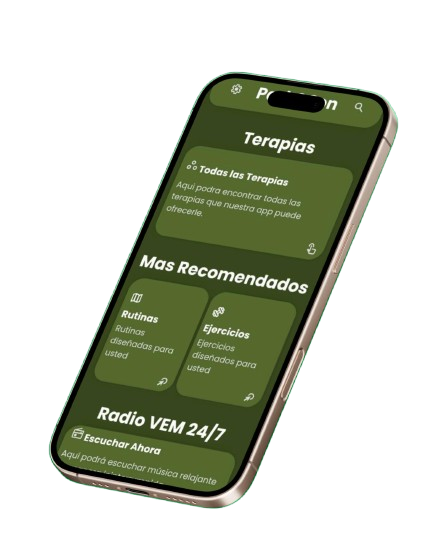

Somos Alternativa
Un proyecto que cambiará vidas

Un proyecto que cambiará vidas
Mejora la flexibilidad, el equilibrio y la concentración a través de posturas adaptadas.
Movimientos suaves y fluidos que mejoran la coordinación y reducen la rigidez muscular.
Utiliza el ritmo y la melodía para mejorar el movimiento y el estado de ánimo.
La risa como herramienta terapéutica para reducir el estrés y mejorar el bienestar.
Expresión artística que mejora la motricidad fina y estimula la creatividad.
Ejercicios para mejorar el habla y la comunicación afectadas por la enfermedad.
Park&son es un proyecto que busca promover la actividad física, movilidad, equilibrio y coordinación en pacientes de Parkinson, a través de las terapias alternativas. Buscando una mejoría y nuevos avances en los tratamientos para dicha enfermedad.